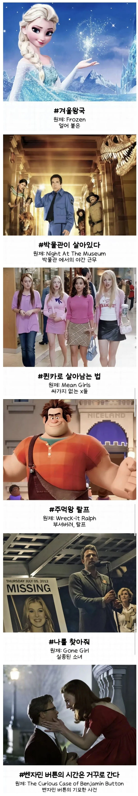

영화 제목 살려내는 K-번역.jpg
댓글
몇개는 죽은제목이라기엔 영어만의 말맛이 있긴해
이거지
새벽의 저주
'얼음왕국의 전설' 근데 쓰고보니까 왜 빨간모자의 진실은 제목을 그렇게 했을까
테이큰
"내 남자의 아내도 좋아"
"가을의 전설"
클레멘타인
민걸스 = 쌍년들
그냥 한국어 화자가 보기엔 PIE 언어들이 이상해 보이는 것일 뿐임. 반대로 그쪽 사람들도 한강의 "작별하지 않는다" 따위의 제목들을 번역하는데 꽤나 고민했다고 하더라고. '이게 무슨 소리인가' 하면서. 딱히 살렸다거나 뭘 했다거나 하는 게 아니라는 뜻. 그래서 번역 작업이라는 건 재해석이고, 번역 대상의 언어보다 번역될 언어를 잘 하는 게 더 중요함.
나를 찾아줘가 진짜 묘한 제목임 존나 궁금해져
파문전사는 젊음을 오래 유지하지